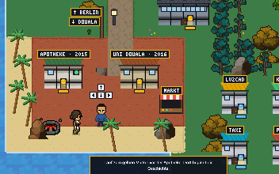

Freiburg im Breisgau, GermanyThe Investigation EditionEst. 2026
Boris Djiogho
The personal record of a business informatics specialist
2026·Vol. I·Selected works & notes·Price: a friendly hello
Case No. 26 · Findings publishedFile under: open investigations
A business informatics specialist in Freiburg who translates between business and technology.
Three degrees in: Boris Djiogho builds AI pipelines,
optimization models and business applications, most recently through almost four
years in Digital Solutions at Forvis Mazars.
By the investigation desk · Reporting from Freiburg, between workshop and code
He enjoys the whole process: taking a question from the first
workshop with the business side to the model that computes the answer. The trail
runs from a pharmacy in Douala via biology studies to computer science, with an
M.Sc. in Business Informatics and a parallel B.Sc. in Digital Management from TU
Clausthal.
When a case calls for it, he reaches for Python and SQL, for Gurobi when
something must be optimal, and for LLM pipelines when documents will not read
themselves. Healthcare keeps reappearing in his files: care workflows and
usage-data analysis in the Pflegebrille research project, an AI learning platform
for nursing students at HealthHack 2026.
No. 26Edition · First printing
3 languagesFrench · German · English
3 degreesTwo of them in parallel
3 continentsCirculation: Douala to Freiburg
The evidenceExhibits A to H · From the case files
Selected Works

ConfirmedExhibit Arecovered from the game world
Exhibit A · Flagship
The game world & its engine
This portfolio exists twice, and the front door leads into a walkable pixel world
whose JavaScript canvas engine the subject wrote entirely from scratch: game
loop, collision detection, tilemap rendering, depth sorting and a dialogue
system, without any framework. Twenty-one bilingual stations retell the whole
record; the sprites come from Anokolisa's Pixel Crawler pack.
AI learning platform for international nursing students, built at HealthHack
2026: voice-to-voice language practice, placement test, KPI dashboard for
teachers.
Job shop scheduling: mathematical modeling and exact solution of the
classic JSSP with FICO Xpress, with an analysis of solution quality and computing
times.
ForensicsSubstances detected on the subject, as of this edition
The Lab Report
Substance
Code
Detected
Finding
Python · Pandas · NumPy
PY
Most days
Primary tool
SQL
SQL
Most days
Primary tool
LLM applications
AI
In most recent projects
Primary tool
Low-code · Betty Blocks
LC
Almost four years at work
Primary tool
Gurobi · FICO Xpress
MILP
Thesis and study projects
Comfortable
Java · Spring Boot
JVM
In projects
Comfortable
JavaScript · React
JS
In projects, one game engine
Comfortable
R · Tableau · SPSS
DATA
Analyses and dashboards
Comfortable
Machine learning
ML
Coursework and Kurare
Comfortable
Git · VS Code
DEV
Every project on file
Comfortable
Microsoft 365 · Power Automate · Copilot Studio
M365
At Forvis Mazars
Comfortable
SAP
ERP
Basics on record
Trace amount
Docker
INFRA
Currently in the lab
In training
Kotlin
JVM
Currently in the lab
In training
Game development
GAME
One engine shipped, more loops under study
In training
All confirmed substances were detected in production code,
term papers and dashboards; the training samples are still brewing. Samples available
on GitHub.
Character evidenceSocial skills, each with the receipts on file
The Witness Statements
Leadership
Association president since May 2022African Cultural Association Clausthal
Responsible for budget planning, sponsorship acquisition and events, from
intercultural festivals to Cameroonian nights at Mokele Mbembe.
Teamwork
Kurare, HealthHack 2026Interdisciplinary hackathon team
From concept to demo in one weekend, together with people from nursing, design
and tech.
Communication
Citizen developer coachingForvis Mazars · and before that: a kindergarten, in German
Trained business users to become citizen developers. His toughest communication
school before that: a Berlin kindergarten, in his third language.
Mentoring
Education officer since April 2026Cameroonian Students of Clausthal (CSK)
Study guidance and support for students walking the same path he once did.
Committee work
Student council & parliament since March 2023TU Clausthal
Represents student interests and negotiates in university committees.
Intercultural fluency
Three continents, four homesDouala · Berlin · Chengdu · Freiburg
Works in French, German and English; summer school at Sichuan University in
China.
References for every statement on
LinkedIn
or on request.
Known whereaboutsMovements on record since 2015
The Career Ledger
Oct. 2022 to July 2026
Working Student, Digital SolutionsForvis Mazars · Berlin and remote
Observed almost daily: building business applications on the low-code platform
Betty Blocks, gathering requirements with business departments, specifying
interfaces and coaching business users to become citizen developers.
Jan. 2021 to Oct. 2022
Research AssistantChair of Human-Centered Information Systems, TU Clausthal
In the Pflegebrille project (AR glasses for nursing care): work on care
workflows and the user-friendly presentation of patient information, plus
independent analysis of usage data from nursing homes in a purpose-built
dashboard. On the side, Android apps for seminars and robot experiments, with
robot communication via MQTT.
Oct. 2020 to Feb. 2021
Intern, Online MarketingUnicorn Factory Media
A short stint in content and SEO: on-page and off-page optimization, and a
taste of how visibility is engineered.
Summer 2019
Summer Production WorkerDaimler · Rastatt
First recorded appearance on a factory floor. Two months on the assembly line
that taught him what process optimization means in practice.
Nov. 2017 to May 2020
Volunteer, Early EducationGustav Adolf Protestant Kindergarten · Berlin
Volunteer work in early education alongside his German course: his first
everyday German, and a lasting lesson in communication.
2015 to 2017
Pharmacy AssistantPharmacie du Marché · Douala
First job, right in the neighborhood, while studying biology and learning
German. The healthcare thread in this file starts here.
The study records
Degrees, certificates & languages
M.Sc. Business Informatics, TU Clausthal, 2023 to 2026 · thesis on EV route planning
B.Sc. Digital Management, completed in parallel, 2023 to 2026
B.Sc. Business Informatics, TU Clausthal, 2018 to 2023
Summer program, Sichuan University, Chengdu, 2024
Google Data Analytics Certificate, 2021 · Analyze Data with R, 2022
French (native) · German (business fluent, entire degree in German) · English (business fluent, C1)
On the record
Community
President, African Cultural Association Clausthal, since May 2022
Officer for educational affairs, Cameroonian Students of Clausthal (CSK), since April 2026
Student council & student parliament, TU Clausthal, since March 2023
Kindergarten volunteer, Berlin, 2017 to 2020
Off duty
The notices
Running, hiking and cycling
Football
Cooking with friends, game nights
Last seen: exploring the Black Forest
Editorial · The common thread
Sustainability, from e-waste to e-mobility
Discarded devices from Europe end up on dumps in Africa, where children search
old electronics for metals instead of going to school. This image shaped both of
the subject's theses: a quantitative analysis of how waste electrical equipment
is returned in Germany, and route planning for electric vehicles with nonlinear
charging functions, so that electric logistics is not only clean but also
efficient.
Submit a tipThe desk is open for select work · 2026